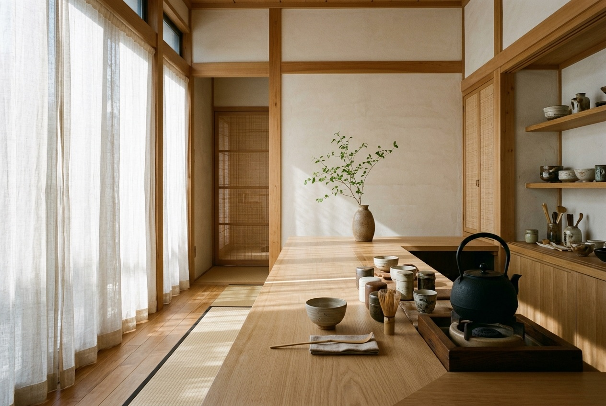

Single-cultivar Japanese tea, stone-milled in Kuramae. 蔵前の朝に点てる、単一品種の日本茶。
Kuramae, Tokyo — Open 10:00 to 18:00 (Closed Tuesdays)東京・蔵前 — 10:00〜18:00（火曜定休）
Leaves from one mountain garden,
whisked without hurry.
ひとつの茶園から届く葉を、
一椀ずつ静かに点てる。
Rather than blending leaves from multiple regions, SORA works directly with small family tea gardens in Wazuka and Uji. Each week we stone-mill small batches of Samidori and Gokou tencha so the natural sweetness and aroma remain intact without added sugar. 複数の産地を混ぜ合わせず、京都・和束町や宇治の小さな茶園から単一品種の茶葉を直接仕入れています。毎週少量ずつ石臼で挽くことで、砂糖を加えずともやわらかな甘みと香りが広がります。
Walk-in guests are welcome at our eight-seat hinoki counter or for takeout. Oat milk, organic soy milk, and plant-based seasonal wagashi are prepared daily. 檜カウンター8席での喫茶、テイクアウトともに予約不要でご利用いただけます。オーツミルク・有機豆乳への変更や、植物性素材の季節菓子も毎日ご用意しています。

Before Your Visitご利用案内
- Walk-ins & Takeoutご予約・テイクアウト
- No reservation is needed for regular drinks or sweets. Takeout cups are available for all lattes and cold-brew teas. Seated counter guests are kindly asked for one drink per person during busy hours.通常の喫茶・テイクアウトは予約不要です。飲み比べ体験のみ事前予約を承ります。混雑時の店内利用はワンドリンク制をお願いしております。
- Plant-Based & Allergiesアレルギー・植物性ミルク
- Oat milk and organic soy milk are always available using dedicated steaming pitchers. Please inform our staff of any nut or food allergies before ordering.オーツミルク・有機豆乳を専用ピッチャーにてご用意しています。ナッツ類などアレルギーをお持ちの方はご注文時にお知らせください。
- Payment & Pricingお会計
- Visa, Mastercard, Amex, Apple Pay, Suica / Pasmo, and cash are accepted. All listed prices include consumption tax, and tipping is not expected in Japan.各種クレジットカード、交通系IC、Apple Pay、現金がご利用いただけます。表示価格はすべて税込です。
Accessアクセス
- Address住所
- 3-14-6 Kuramae, Taito-ku, Tokyo 111-0051
東京都台東区蔵前3-14-6 1F〒111-0051 東京都台東区蔵前3-14-6 1F - Station最寄駅
- 4 min walk from Kuramae Station (Toei Oedo / Asakusa Line, Exit A6)都営大江戸線・浅草線「蔵前駅」A6出口より徒歩4分
- Hours営業時間
- 10:00 – 18:00 (L.O. 17:30) · Closed Tuesdays火曜定休
- Seats席数
- 8 hinoki counter seats檜カウンター 8席
蔵前駅（大江戸線 A6出口）から徒歩4分、国際通りと江戸通りの間の路地です。